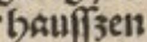

Sowohl in Fraktur- als auch in Antiquatexten können zwei Formen des Kleinbuchstabens s auftreten: das Schaft-s (ſ, U+017F, LATIN SMALL LETTER LONG S) und das runde s (s, U+0073, LATIN SMALL LETTER S). Sie werden in der Transkription unterschieden.
Bei der Ligatur von Schaft-s und z ist diese nicht aufzulösen sondern als sogenanntes ß (gesprochen sz) wiederzugeben. Ausnahmen und Besonderheiten stellt die folgende Tabelle dar.
| Vorlage | Erläuterung | transkribierter Text |
|---|---|---|
 |
Ein Schaft-s gefolgt von einem s wird vorlagengetreu als ſs wiedergegeben. | daſs |
|  | Ein Schaft-s gefolgt von einem z wird vorlagengetreu als ſs wiedergegeben. | hauſſzen |
 |
Die Ligatur Schaft-s + z wird vorlagengetreu als ß wiedergegeben. | daß |